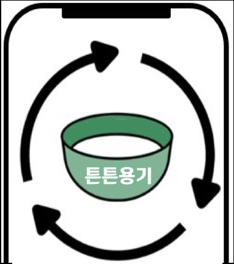

2021 · 서비스 기획 · 환경
튼튼 용기
배달 음식의 일회용 플라스틱 문제를 풀기 위해 표준 다회용 배달 용기를 돌려 쓰는 서비스를 기획했습니다.

‘배달 수요는 그대로 두고 환경 문제를 줄일 수 있을까?’라는 질문에서 출발한 키스톤 디자인-창의설계 팀 프로젝트입니다. 서로 다른 학과 4명이 모였습니다.
서비스 구조 · 사장님이 앱으로 참가를 신청하면, 한 지역에 참가 가게가 모였을 때 수거·세척 부서를 운영합니다. 용기는 PP 소재의 표준 규격으로 통일하고, 소비자가 용기함에 반납하며 QR을 찍으면 마일리지가 쌓이도록 설계했습니다.